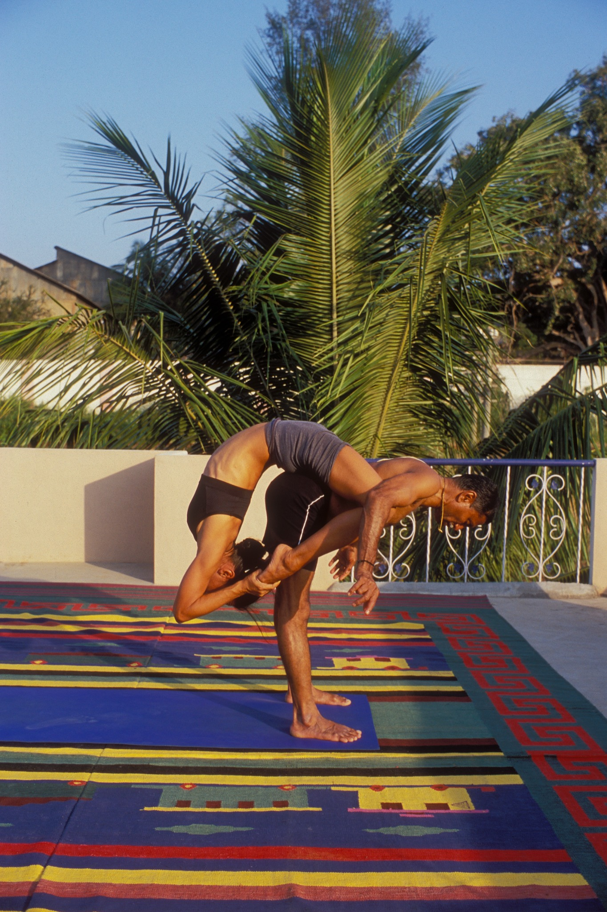

Sheshadri
Sheshadri is an experienced and respected teacher of traditional Ashtanga Vinyasa Yoga and Pranayama. He has been teaching since 1994 and follows the traditional lineage associated with Sri T. Krishnamacharya, Sri K. Pattabhi Jois and his Guru, Sri B.N.S. Iyengar.
Yoga journey and training
Sheshadri studied Yogasana, basic and advanced Pranayama, Bandha, Mudra and yoga philosophy for 13 years under Sri B.N.S. Iyengar at Parakala Mutt Yogashala in Mysuru. He also travelled throughout India to study yoga and transcendental meditation.
He studied Maharshi Patanjali's Yoga Sutras and practised Ashtanga Yoga under Maharshi Nagaraja Surya Narayana Pande for three years. His additional training includes SSY, SSY Higher, NSY, MSY, Patanjali Kriye and TTC with Guruji Prakash Yogi. He completed YTTC, Diploma in Yoga and Postgraduate Diploma in Yoga, and secured first rank in the Diploma in Yoga and Nature Cure conducted by a university.
Read more about Sheshadri's teaching and PAVY Shala
Establishing PAVY Shala
In 1994, Sheshadri established PAVY Shala and began teaching traditional Ashtanga Vinyasa Yogasana and Pranayama at Renukacharya Temple in Mysuru, where he continued until 2000. He began teaching Western students there in 1998. In 2001, he established Mysore Mandala Yoga Shala with Mr. Ian Robertson, continuing classes and teacher training.
Known for attentive teaching and a keen eye for detail, Sheshadri developed a style of dynamic, precise adjustments intended to help each practitioner work according to their individual needs and capacity. He has shared his experience with thousands of students through classes and teacher training courses.
Passing on the tradition
Sheshadri passed his knowledge and teaching techniques to his son Harish, Director of PAVY Shala. They have taught together regularly since 2004. In 2008, they began teaching from their new shala in Krishnamurthypuram, Mysuru, under the name PAVY Shala — Patanjala Ashtanga Vinyasa Yoga Shala.
International workshops
- 2006: Vienna, Austria.
- 2007: Berlin and Cologne, Germany.
- 2008–2010: Workshops across Austria, France, Germany and Budapest.
- 2011–2013: Regular European workshops, plus workshops in Thailand and Lebanon in 2012.
- 2017: A 50-day tour in France, including Lyon, Chamonix, Marseille, Biarritz, Lille and Paris.
- 2019: A 50-day tour in France, including Lyon, Chamonix, Biarritz, Lille and Paris.
Credentials and awards
Sheshadri secured third place at the 7th International Yoga Festival in 1999, organised by the Department of Tourism in Pondicherry, India.
- Shresta Sadhaka — GSS Yoga Foundation & Prachodayat
- Yoga Sutra Ratnakara — GSS Yoga & Himalaya Foundation
- Yoga Chaitanya — CYK Research Foundation
- Yoga Bhaskara — BSV Kendra & Himalaya Foundation
- Yoga Ratna — Himalaya Yoga Foundation & Mysuru Yogashala
- Dasara Yoga Siri (2013) — Government of Karnataka, Mysuru
- Yoga Chatura (2014) — Swami Vivekananda Kannada Yuva Yoga Balaga, Mandya
- Yoga Bhushana (2015) — GSS Yoga Foundation, Mysuru
- Yoga Visharada (2016) — VYE & RI, Mysuru